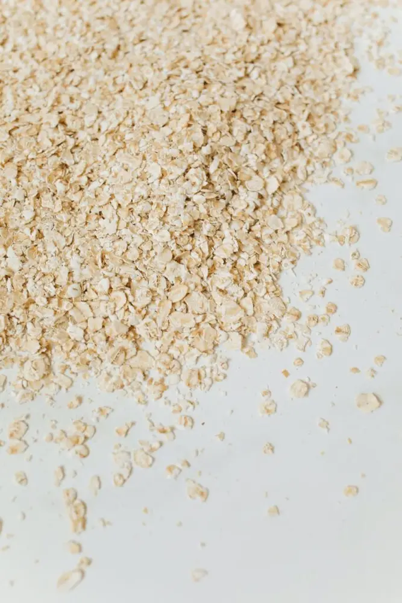
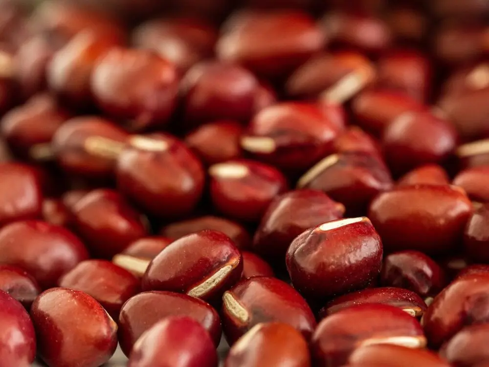
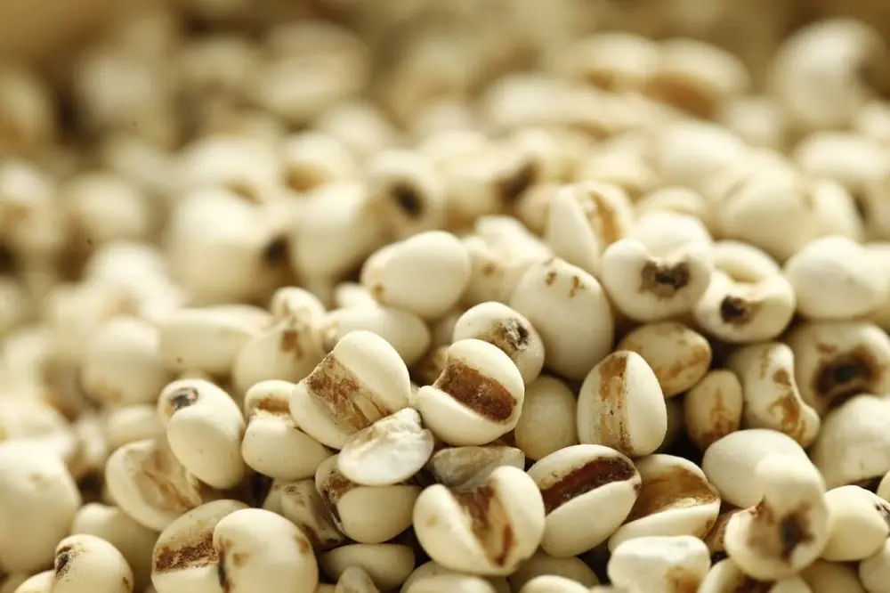

文章 / 飲品配方與資訊
Top up your drinks with healthy toppings!
這篇是英文原文，尚未完成繁體中文翻譯。中文選單與相關商品連結不會切回英文介面。
查看英文原文（尚未翻譯）
When you think of bubble tea toppings, what comes into your mind? Most would think of tapioca pearls obviously, while others may also think of jellies, popping boba and puddings.
What if you want something equally delicious, but healthier? Something like oatmeal and beans, perhaps? These may sound like odd choices, but many bubble tea shops are offering those as topping options too!

Oatmeal
Oatmeal isn’t only for the breakfast table, why not add a dollop or two into your milk tea?
Not only does it give the drink its malty sweetness, oatmeal is also a healthy addition to your drink! High in dietary fibres, oatmeal is well-known for its ability to protect your heart by reducing “bad” cholesterol.
It can also provide antioxidants and lower your blood sugar levels too!
Heap some onto your bubble tea, and enjoy a malty, healthy drink!
Red beans
Don’t get this mixed up with the red elbow beans you put in tacos! Red beans, also known as adzuki beans in Japan, is a popular ingredient for desserts in Asia!
Much like red kidney beans, red mung beans is a great source of iron, manganese and potassium. It’s also full of dietary fibres and anti-oxidants as well.
Matcha and red mung beans is a classic combination, but you can also experiment with other drinks as well!


Pearl Barley
Despite its name, this product has nothing to do with actual barley, but rather a different plant altogether! Also known as Job’s Tears, this plant is native to Southeast Asia, and is often eaten as a type of porridge or dessert.
You can also find this ingredient in Traditional Chinese Medicine too! It’s often use to treat allergies, high cholesterol and stomach issues.
Give it a try!
How do I use them?
Aside from adding them to drinks, those toppings are also commonly found in cold or hot desserts common in Taiwan. Nothing spices up a bowl of shaved ice or tofu hua better than red beans and other delicious additions!
Naturally before using those toppings, you will need to cook them first and flavour them with sugar with extra tastiness.
Sounds time-consuming? Not to worry!
With our range of canned beans and other toppings, we’ve done all the prep work for you! Just open a can, scoop some onto your drinks, and enjoy!